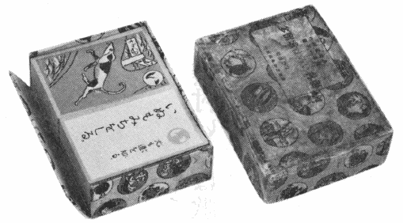
「歌留多」の函
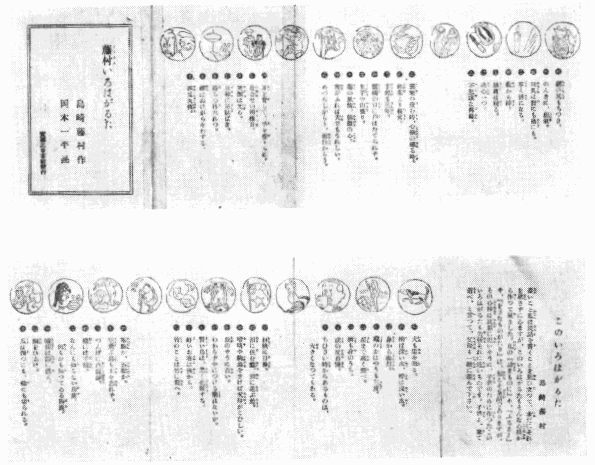
「歌留多」のなかに折りたたみで入っていたパンフレット
［＃改ページ］
長いこと私は民話を書くことを思ひ立つて、未だにそれを果さずにゐますが、このいろはがるたもそんな心持から作つて見ました。私の『幼きものに』や、『ふるさと』や、『をさなものがたり』は、形こそ童話でありますが、その心持は民話に近いやうに、子供のために作つたこのいろはがるたも矢張それに近いものです。子供よ、來て遊べ、と言つて、父母も一緒に遊んで下さい。
い 犬も道を知る。
 れ 零點か百點か。
れ 零點か百點か。
 や 藪から棒。
や 藪から棒。
 る時。
る時。
 め めづらしからう、面白からう。
め めづらしからう、面白からう。
 も 持ちつ持たれつ。
も 持ちつ持たれつ。
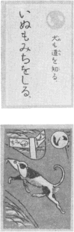
ろ 櫓は深い水、棹は淺い水。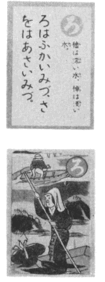
は 鼻から提灯。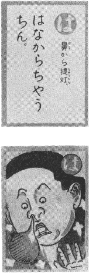
に 鷄のおはやうも三度。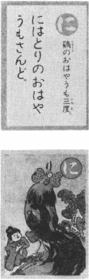
ほ 星まで高く飛べ。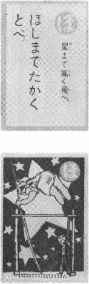
へ 臍も身の内。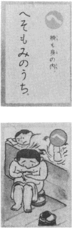
と 虎の皮自慢。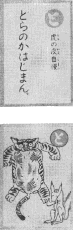
ち ちひさい時からあるものは、大きくなつてもある。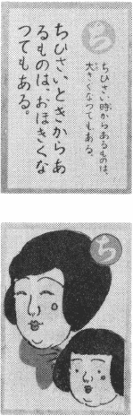
り 林檎に目鼻。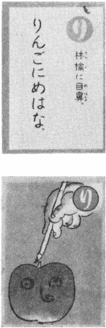
ぬ 沼に住む鯰、沼に遊ぶ鯰。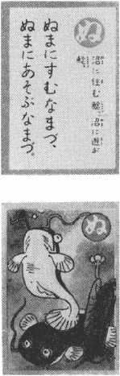
る 瑠璃や駒鳥をきけば父母がこひしい。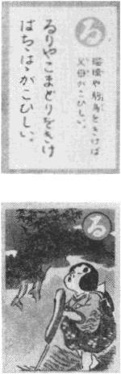
を 丘のやうに古い。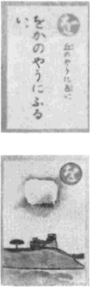
わ わからずやにつける藥はないか。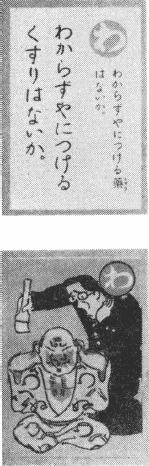
か 賢い鴉は黒く化粧する。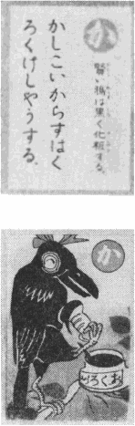
よ 好いお客は後から。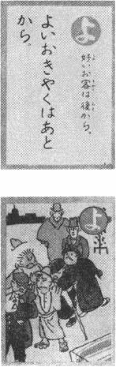
た 竹のことは竹に習へ。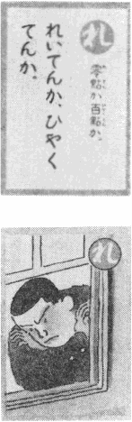
そ 空飛ぶ鳥も土を忘れず。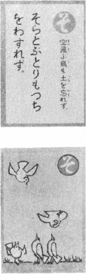
つ つんぼに内證話。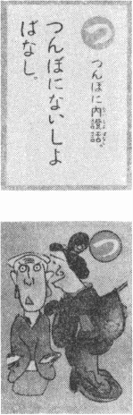
ね 猫には手毬。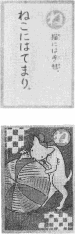
な なんにも知らない馬鹿、何もかも知つてゐる馬鹿。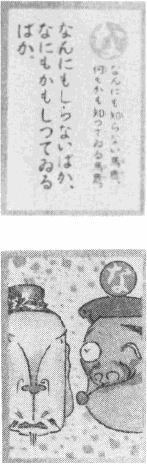
ら 蝋燭は靜かに燃え。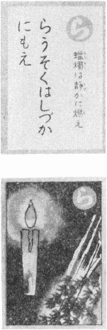
む 胸を開け。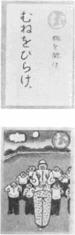
う 瓜は四つにも輪にも切られる。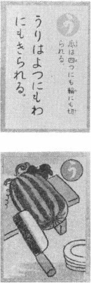
ゐ 猪の尻もちつき。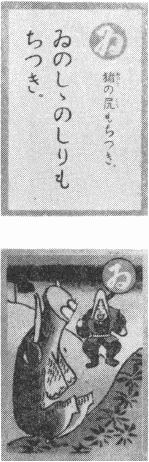
の のんきに根氣。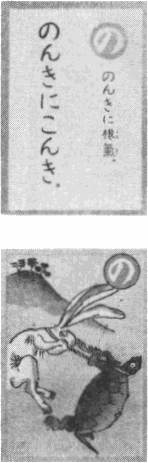
お 玩具は野にも畠にも。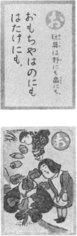
く 草も餅になる。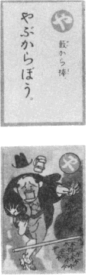
ま 誠實は殘る。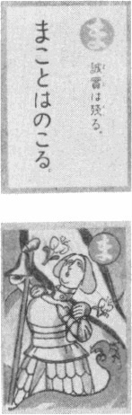
け 決心一つ。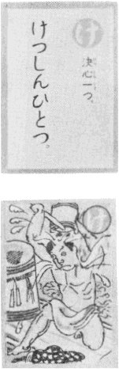
ふ 不思議な御縁。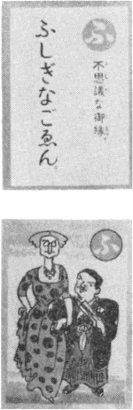
こ 獨樂の澄む時、心棒のる時。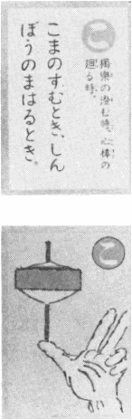
え 枝葉より根元。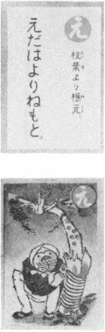
て 手習も三年。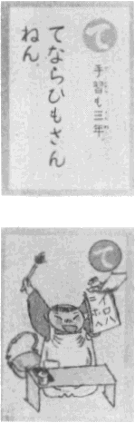
あ 鸚鵡の口に戸はたてられず。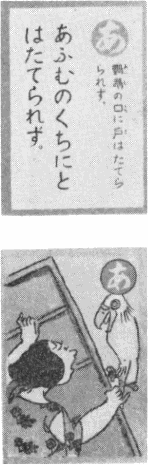
さ 里芋の山盛り。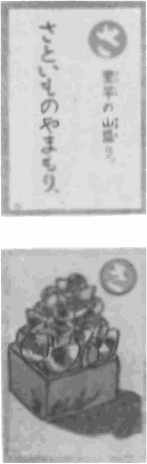
き 菊の風情、朝顏の心。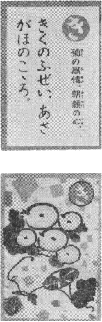
ゆ 雪がふれば犬でもうれしい。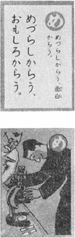
み 耳を貸して手を借りられ。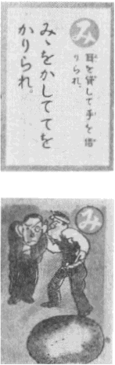
し 仕合せの明後日。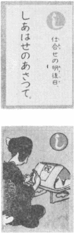
ゑ 笑顏は光る。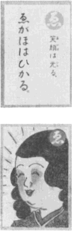
ひ 日和に足駄ばき。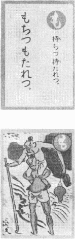
せ 蝉はぬけがらを忘る。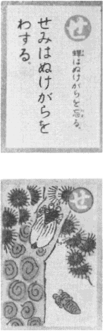
す 西瓜丸裸。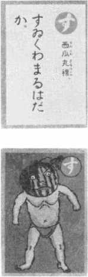